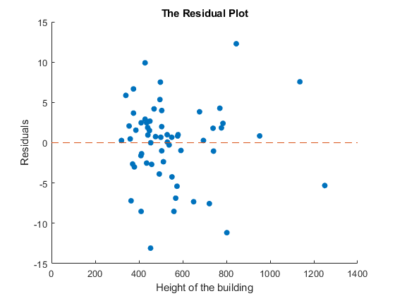
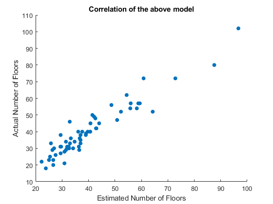

Exercise 10: Coefficient Accuracy
Submitted by Prasannjeet Singh
Contents
Q1. Plotting Residuals of Height and Stories Data
Then also displaying the mean of the error vector
load Data/data_build_stories.mat; X = data_build_stories(:,1); y = data_build_stories(:,2); n = length(y); mdl = fitlm(X,y); b = mdl.Coefficients.Estimate; plotData = [X, y, (b(1) + b(2)*X)]; plotData(:,4) = plotData(:,3)-plotData(:,2); % plotData = sortrows(plotData,1); hFig = figure(1); scatter(plotData(:,1),plotData(:,4),'filled'); hold on; plot([0 1400],[0 0],'--'); title('The Residual Plot'); xlabel('Height of the building'); ylabel('Residuals'); snapnow; close(hFig); meanErrorVector = mean(plotData(:,4))
meanErrorVector = -1.2967e-14
As we cannot observe any patterns in the residual plot above, we can say that the association is linear. This tells us that the model is fairly good. Also as shown, the mean of the error vector is almost zero, which further strengthens our supposition that the current model is good.
Another way to see the correlation between the predicted outputs and actual outputs is to plot both of them in a graph:
hFig = figure(12); scatter(plotData(:,3), plotData(:,2),'filled'); title('Correlation of the above model'); xlabel('Estimated Number of Floors'); ylabel('Actual Number of Floors'); snapnow; close(hFig);
As we can see, the scatter of estimated and actual outputs are aligned along the y=x line, which indicates that the model is a good one.
Q2. Computing the correlation:
The correlation can be computed by the function corrcoef()
cr = corrcoef(plotData(:,2), plotData(:,3)); % Since we are providing two vectors, the output of the above function will % be an identical 2x2 matrix, with ones along with the diagonal, and the % (same) correlation value along the off-diagonals. correlation = cr(1,2)
correlation =
0.9506
As we know that the correlation values lie between -1 and 1, where -1 indicates an opposite correlation, 0 indicates no correlation and 1 indicates the best correlation, the above value of 0.9506 indicates a very good model, which is in concurrence with our conclusion in the first question.
Q3. and Q4. Computing the Confidence Interval
We can find the confidence interval using the Standard Error:
mdl.Coefficients
ans =
2×4 table
Estimate SE tStat pValue
________ _________ _______ _________
(Intercept) -3.3313 1.9795 -1.6829 0.097778
x1 0.080015 0.0034326 23.31 3.835e-31
b0 = [mdl.Coefficients.Estimate(1)+2*mdl.Coefficients.SE(1) mdl.Coefficients.Estimate(1)-2*mdl.Coefficients.SE(1)] b1 = [mdl.Coefficients.Estimate(2)+2*mdl.Coefficients.SE(2) mdl.Coefficients.Estimate(2)-2*mdl.Coefficients.SE(2)]
b0 =
0.6278 -7.2904
b1 =
0.0869 0.0731
Therefore, we are 95% confident that:
- The true value of the intercept () lies between 0.63 and -7.29.
- The true value of the slope of our model (
 ) lies between 0.09 and 0.07.
) lies between 0.09 and 0.07.
- Looking at the graph, we can see that the residual values range from from an estimated -15 to 15 for X values that are very near to each other. Therefore, I think that the intercept range is realistic.
- Yes, based on the above calculated data, we can say that there is a 95% probability that the relationship between X and Y is positive, and ranges from 0.09 to 0.07.